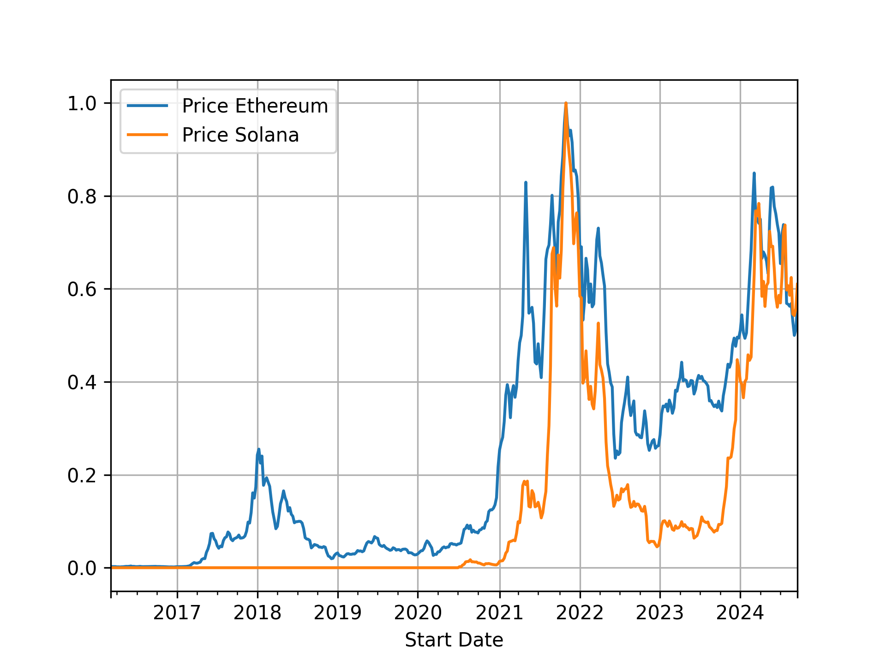
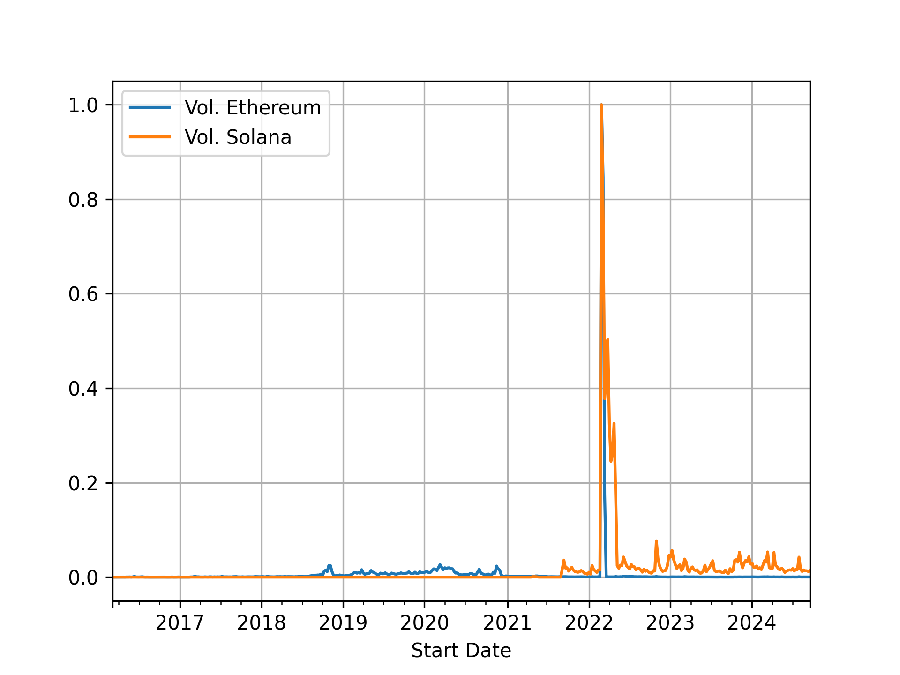
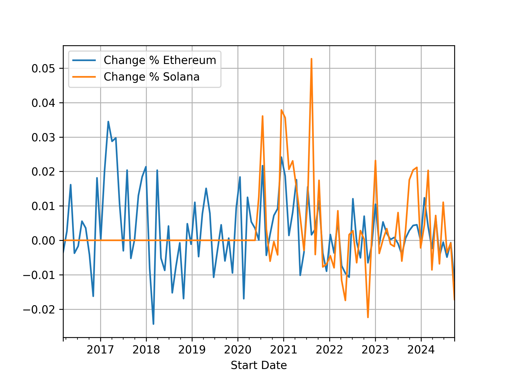
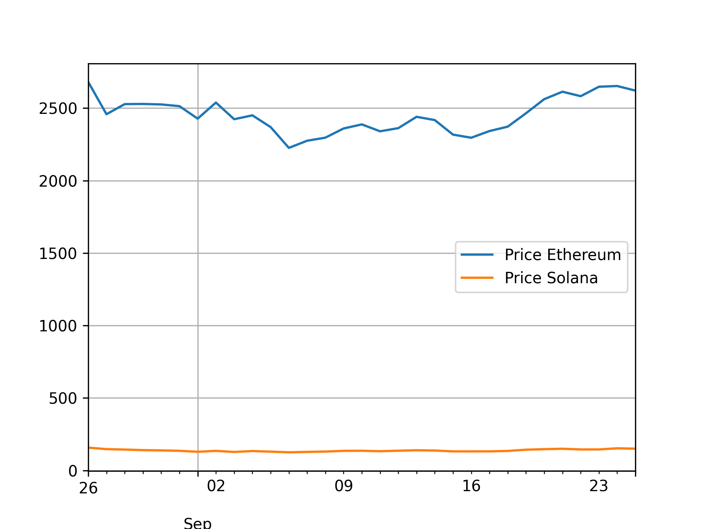
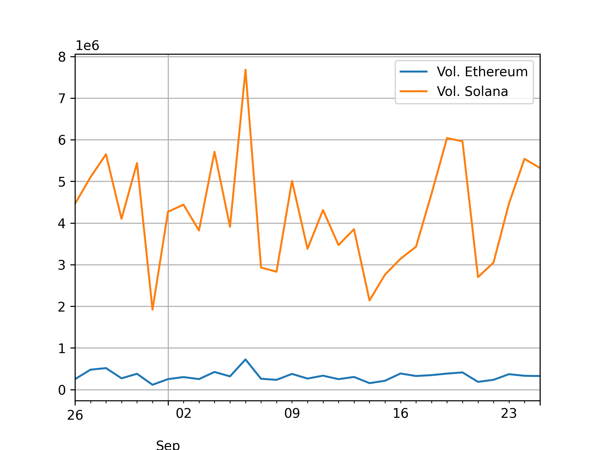

Hipotese 1 : Ethereum ou Solana: qual será mais utilizada?#
Análise Inicial#
Tendo isto em vista que o mercado das criptomoedas é um mercado muito diverso, estarei fazendo uma análise das criptomoedas Ethereum e Solana, pois são moedas com reconhecimento nesse tipo de mercado e que representou um grande interesse de investidores de criptomoedas durante períodos passados.
Observe abaixo, o gráfico que indica o preço de ambas as criptomoedas em todo o período contido no site Investing:
Observe abaixo o gráfico referente aos volumes das criptomoedas (agrupados em semanas):
Observe portanto, que esses dados estão normalizados (os valores representam a porcentagem de quanto do valor máximo foi alcançado naquele momento). Os dados que representam o máximo valor de cada coluna estão abaixo (os dados estão agrupados por semanas):
Price Ethereum |
Vol. Ethereum |
Change % Ethereum |
Price Solana |
Vol. Solana |
Change % Solana |
Vol x Value (Ethereum) |
Vol x Value (Solana) |
|---|---|---|---|---|---|---|---|
4642.79 |
1.29871e+09 |
0.15 |
242.71 |
3.14856e+08 |
0.09 |
3.38163e+12 |
2.6858e+10 |
Nessa tabela, vemos que o Ethereum alcançou um valor extremamente maior que a Solana, e assim também foi nos volumes - observe que, como os volumes são valores grandes, foram escritos com notação científica (e+x refere-se a potência x de 10). Mas nesse caso não é isso que será analisado, iremos focar no comportamento de ambas moedas.
Um outro dado importante a ser analisado é a mudança dos valores, que se referem à mudança observada do dado anterior para o atual. Observe o gráfico abaixo (cujos valores são médias mensais):
Comparando com dados recentes#
Com base nos gráficos apresentados, vemos que ambas as moedas apresentaram picos de preços e volumes entre o segundo semestre de 2021 e o primeiro semestre de 2022, não simultaneamente. Após esse período, o volume permaneceu em extremamente baixo, enquanto a Solana se mantém abaixo de 10% do máximo nesse período, o Ethereum se aproxima, aproximadamente, de 0% do seu volume máximo. Quanto ao preço, ambas moedas voltaram a apresentar um aumento significativo de valor, mas não alcançaram nem mesmo 90% do valor máximo atingido e aparentam estar novamente em queda.
Atente-se ao fato de que os valores referidos são todos agrupados em períodos de tempo específicos, e idem as comparações comentadas, portanto deve-se atentar ao período mencionado.
Observe agora os dados recentes das moedas. Segue abaixo o gráfico referente ao preço nos últimos 30 dias:
E segue o gráfico referente ao volume nos últimos 30 dias:
Observe que esses valores não estão normalizados e representam os valores brutos apresentados ao longo dos últimos 30 dias. Percebemos que, enquanto o Ethereum permaneceu abaixo de 1.000.000, a Solana variou de 8 vezes esse valor a 2 vezes, mas no momento aparenta estar caindo com determinada resistência.
Considerações Finais#
Portanto, após analisar os gráficos e os dados apresentados nas tabelas, podemos ver que, embora ambas criptomoedas tenham apresentado um grande pico, principalmente em 2021 e 2022, elas estão estabilizando no valor atual, isso pode ser observado principalmente no gráfico das mudanças (3° gráfico apresentado), que apresenta um “afunilamento” dos valores - os picos de variações estão diminuindo gradativamente.
Além disso, podemos ver que os valores recentes estão, de certo modo, extremamente estáveis (principalmente da Solana). Como o mercado das criptomoedas é uma área de investimento extremamente volátil e sensível, a maior parte dos ativos não costuma seguir constante por muito tempo, ou ele apresenta uma grande ascenção ou uma grande queda que culmina na sua quebra.
Sendo assim, como os dados de valores (que estão em queda), e de volumes (que são extremamente pequenos comparados ao máximo atingido), podemos fazer a suposição de que essas moedas apresentarão uma queda e deixarão de ser utilizadas em breve. Essa suposição não pode ser afirmada com certeza, devido a incerteza do mercado, mas, ao analisarmos mercados de criptomoedas e investimentos, que apresentam grande importância nessa área, vemos que os indicadores desses mercados é de venda para ambas as moedas, o que implicará numa queda ainda maior de volume.
Conclusão#
Nem uma e nem outra!
A tendência é que ambas as criptomoedas deixem de ser utilizadas em breve ou sejam utilizadas em um volume ainda menor do que o atual. Como o Ethereum é uma moeda mais antiga e possue maior valor de mercado, assim como reconhecimento de investidores, ele tende a se manter por mais tempo que a Solana. Porém, a menos de uma mudança nos padrões observados, ou um acontecimento que dê maior visibilidade para essas moedas, elas tendem a ser cada vez menos utilizadas.
Arquivos utilizados#
Os arquivos e dados utilizados nessa hipótese podem ser gerados a partir do código hipotese_Jean.py. O código pode gerar diversos outputs, que se referem ao período de tempo selecionado em cada execução. Os outputs que geram arquivos serão armazenados nas pastas dataframes e imagens dentro da pasta data.
Os arquivos aqui utilizados são gerados nos períodos de meses e semanas (representados pelos caracteres M e W, que devem ser passados durante a execução do código). Note que esse processo irá gerar também arquivos que não foram utilizados aqui, mas que podem ser utilizado para a análise de outros dados.